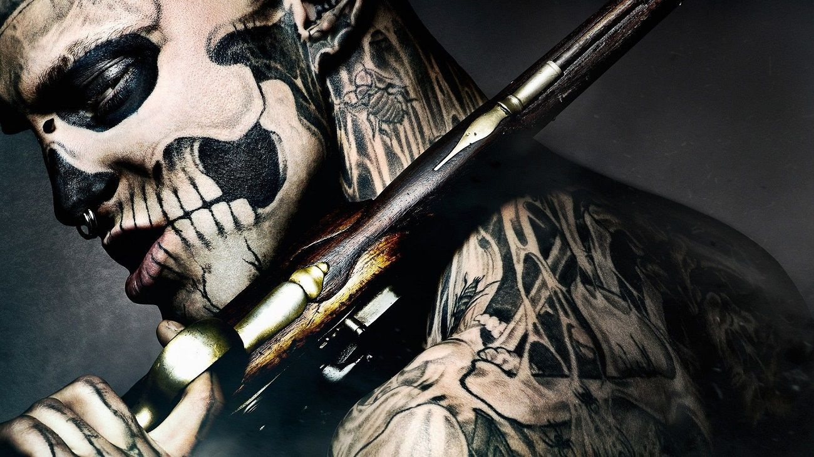

Découvrez le tatouage sous toutes ces formes graces à nos infos, conseils et découvertes !
Un contenu complet, propre et mis à jour régulièrement ! C'est la base du tattoo venez sans rien savoir et vous ressortirez avec toutes les connaissances et la culture nécessaire pour comprendre l'univers du tatouage.
Vous manquez d'idées pour vos tatouages ? Vous êtes au bon endroit !
Vous avez la possible de rechercher votre prochain tatouage avec nos nombreux catalogues de modèles trié par styles ou par symbole !
Amateur ou expert en tatouage, toute personne est la bienvenue sur le site afin d'apprendre ou partager ses connaissances ! N'hésitez pas non plus à utiliser le forum afin de débattre avec la communauté du site !
Le tatouage avait presque disparu mais au XVIIIe siècle les marins le réintègrent. Le tatouage jusqu'en occident, tous les marginaux veulent le leur ! En effet, c'est les prisonniers qui vont faire connaître cette pratique au fil des années en occident. Seulement, ce n'était pas tout le temps avec leur bon vouloir, ça été aussi une punition notamment pendant l'esclavage et le 3ème reich ou ils étaient marqués comme des animaux. Puis il se démocratise dans les années 70, ces sont les rockers, punk ou les bikers qui sont les premiers a tester le tatouage comme un geste de rébellion. Les années 90 sont un tremplin pour les tatouages devenant une mode, ce qui permet aux matériel et aux techniques d'être améliorées.
